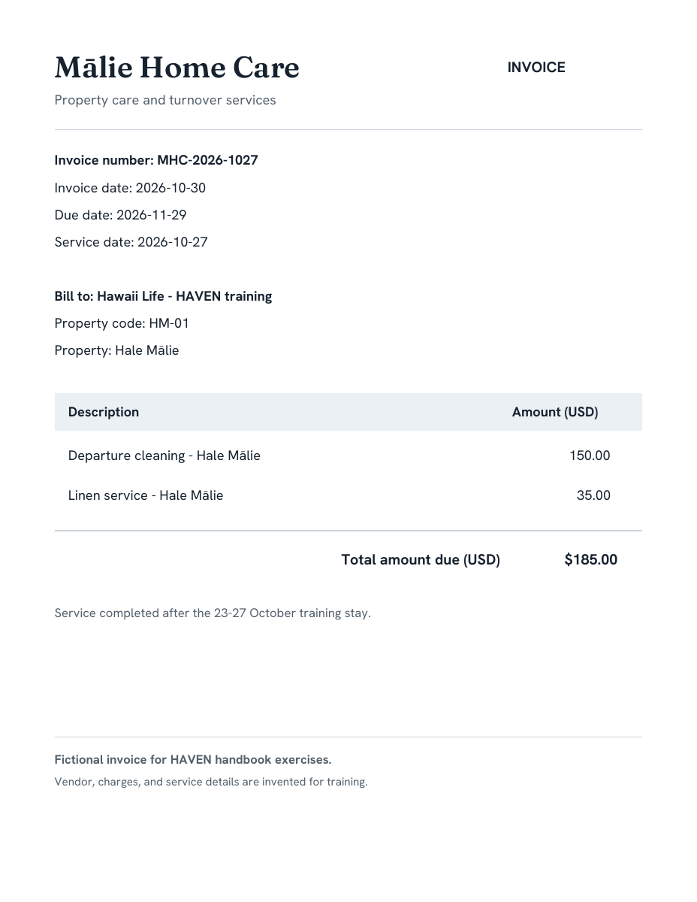
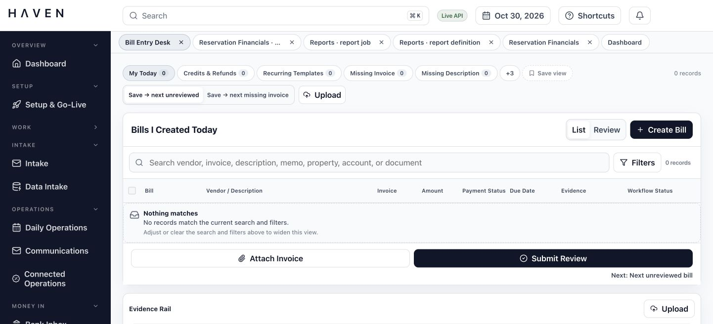
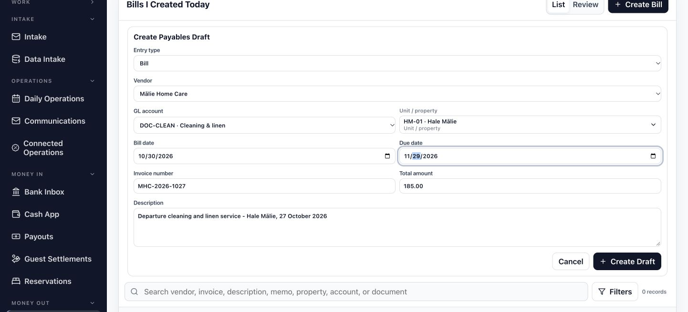
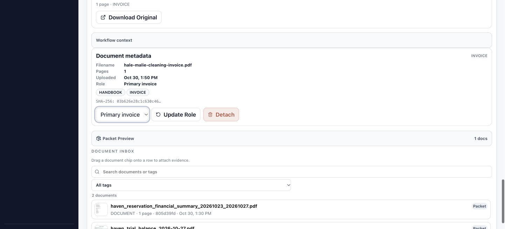
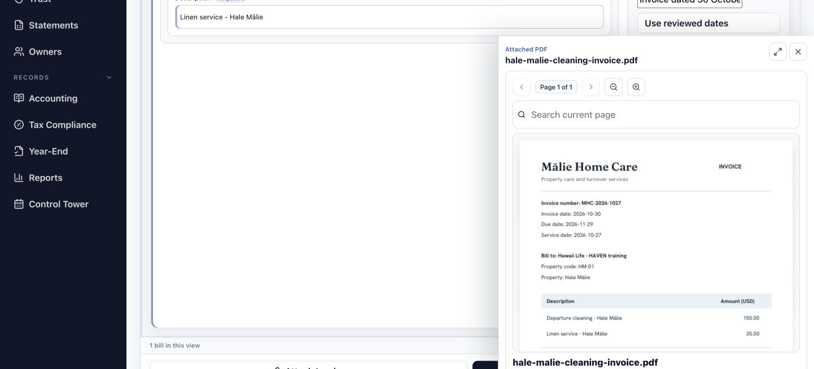
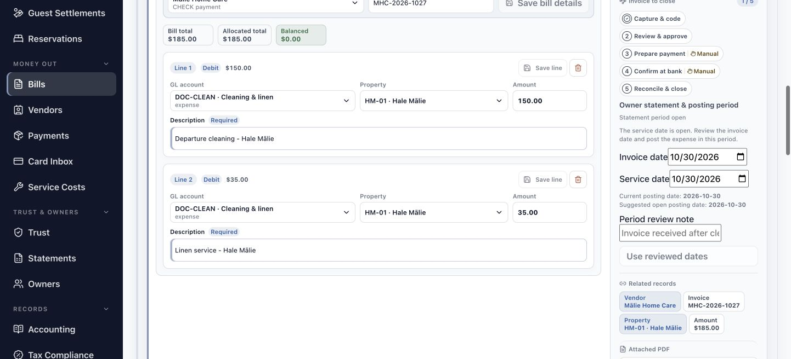
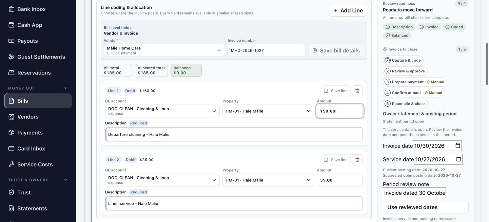
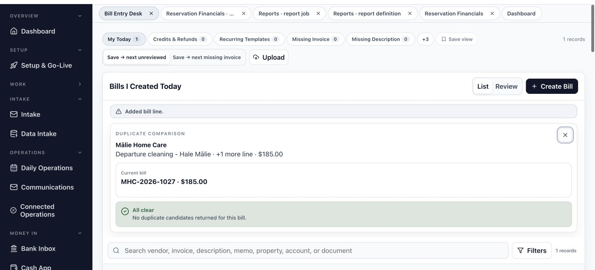
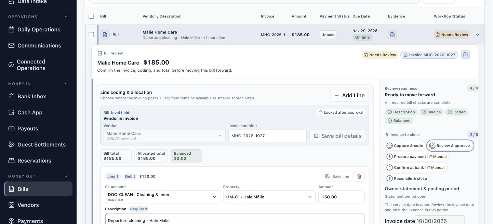
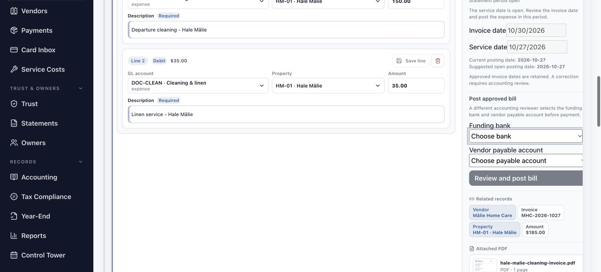

HAVEN Invoice Processing Guide
Prepare and approve a vendor invoice, then hand its source and coding to accounting.
For Accounts-payable staff and invoice reviewers.
- Open HAVEN with access to Bill Entry Desk and the invoice evidence rail. An independent reviewer needs access to review and approve bills.
- Use the fictional Mālie Home Care vendor, DOC-CLEAN · Cleaning & linen account, and HM-01 · Hale Mālie property already configured for this exercise.
- Use the sample invoice for the departure service following Hale Mālie’s 23–27 October 2026 stay.
- In the prepared workspace, open the existing approved MHC-2026-1027 bill and follow its saved results. The creation and save steps describe processing a new training invoice.
Begin with the source invoice
Use one invoice to connect the service, property, charges, and review.
Do: Open the sample invoice and read its vendor, invoice number, property code, service date, invoice date, due date, and total.
You should see: Mālie Home Care invoice MHC-2026-1027 identifies HM-01 · Hale Mālie. The service date is 27 October 2026; the invoice date is 30 October and payment is due 29 November.
Do: Compare the two descriptions and amounts on the invoice.
You should see: Departure cleaning is $150 and linen service is $35. Together they total $185 for service after the 23–27 October stay.
Carry the source through the work
The source invoice is the reference for the bill you will prepare. Its invoice number identifies this vendor document; the property code identifies where the service belongs. Keep both in view when moving between the document and the bill. The service date records when the work took place, while the invoice date records when the vendor issued this document.

Open the invoice workspace
Keep the source document and its bill in the same working context.
Do: Open Bill Entry Desk. In the prepared workspace, find Mālie Home Care invoice MHC-2026-1027 and select it.
You should see: The selected bill shows the example vendor, invoice number, and $185 total. Its saved details provide the reference for the following pages.
When starting a new training invoice:
Do: Choose Upload, select the sample invoice PDF, and select that document in the evidence rail.
You should see: The uploaded source appears in the document list. Selecting it lets you inspect the invoice and later attach it to the correct bill.
Begin from the record that already exists
The prepared example lets you follow the saved invoice through the whole review. Use its existing bill and attached document when reading this guide. When processing a new invoice, the upload and creation steps establish those records first. Keeping the same vendor, invoice number, and source together makes it easier to tell a new document from another copy of an invoice already in HAVEN.

Create the payables draft
Enter the invoice identity and one initial allocation before saving the bill.
When processing a new training invoice:
Do: Choose Create Bill. In Create Payables Draft, keep Entry type as Bill, choose Mālie Home Care, and select DOC-CLEAN · Cleaning & linen as the GL account.
You should see: The draft form identifies the vendor and the account used for this example.
Do: In the new draft, select HM-01 · Hale Mālie under Unit / property. Set Bill date to 2026-10-30, Due date to 2026-11-29, Invoice number to MHC-2026-1027, and Total amount to 185.00.
You should see: The form matches the invoice header and assigns this property bill to the listed HM-01 record.
Do: In the new draft, enter a description covering the cleaning and linen service, then choose Create Draft.
You should see: HAVEN saves a draft bill for $185. Select that saved bill to attach its source and review its allocations.
Select the accounting destination deliberately
The account and property serve different purposes. Cleaning & linen describes the expense; HM-01 identifies the property that received the service. Choose the complete property code from the listed results. Business / no property is a separate destination for company expenses. This example belongs to Hale Mālie, so its allocation uses HM-01 throughout.

Attach the primary invoice
Give the saved bill its source document before reviewing the evidence.
When the source is not yet attached:
Do: Keep the Mālie Home Care bill selected. In the evidence rail, select the cleaning invoice PDF and set Document role to Primary invoice.
You should see: The source filename and role describe the document you are about to link to this bill.
Do: For a new attachment, choose Attach to Bill. Review the bill’s attached document and Packet Preview.
You should see: The PDF is linked to the selected bill as its primary invoice. Packet Preview includes the source among the bill’s evidence.
Confirm the document-to-bill relationship
Uploading a file and attaching it to a bill are separate actions in this route. The attachment gives reviewers a direct path from the bill to the vendor’s source. Check the selected bill before attaching: the vendor, invoice number, and amount should describe this $185 invoice. When the correct primary invoice is already linked, continue with that saved attachment.

Compare the bill with its PDF
Read the source beside the values that HAVEN will carry forward.
Do: Expand the selected bill and choose View document on its attached invoice. If useful, choose Dock preview beside the form.
You should see: The invoice opens for reading while the bill remains your working record. The docked arrangement keeps the source and form together.
Do: Compare Mālie Home Care, MHC-2026-1027, HM-01, and the $185 total. Return to the bill after reading the two service descriptions.
You should see: The document and bill describe the same invoice. You can use the source amounts to split the initial allocation into cleaning and linen lines.
Keep source comparison specific
A familiar vendor name is only one part of the match. Read the invoice number, property, dates, descriptions, and total together. This short comparison establishes the facts used in line coding and period review. If a header needs correction while the bill is editable, change Vendor or Invoice number and choose Save bill details; each allocation line has its own Save line control.

Split the service into two lines
Make the bill’s allocations explain the two charges on the source.
When preparing the draft allocations:
Do: In Line coding & allocation, set line 1 Amount to 150.00 and Description to Departure cleaning – Hale Mālie. Keep DOC-CLEAN · Cleaning & linen and HM-01 · Hale Mālie selected, then choose Save line.
You should see: The first saved line records $150 for the departure cleaning.
Do: In the new allocation, choose Add Line. Review the remaining amount of 35.00, choose DOC-CLEAN · Cleaning & linen, and select HM-01 · Hale Mālie from Property.
You should see: The new line has the remaining $35 amount and an explicit account and property selection.
Do: In the new allocation, enter Linen service – Hale Mālie as the description and choose Save line for line 2.
You should see: Both service lines are saved. Their descriptions and amounts match the two entries on the invoice.
Save each allocation as its own record
A split invoice can use the same account and property on several lines. Here, the separate descriptions preserve what the vendor charged for cleaning and linen service. Add Line can suggest the amount remaining to allocate, but the reviewer still chooses its account and property. Read the saved line after each change so the next allocation starts from the amount already recorded.

Check the allocation total
Use the total strip to confirm that the full invoice is represented.
Do: Compare Bill total and Allocated total above the lines. Read the remaining Difference or Balanced amount.
You should see: Bill total and Allocated total both show $185. The strip shows Balanced with $0.00.
Do: Read both saved lines once more against the PDF: $150 departure cleaning and $35 linen service, each assigned to HM-01 and Cleaning & linen.
You should see: The amounts add to the source total, and the descriptions explain how the invoice has been allocated.
Balance and coding answer different questions
Balanced means the line amounts account for the bill total. The account, property, and descriptions explain where those amounts belong. A $185 allocation to the wrong property can still add up correctly, so read these fields together. For this invoice, the useful result is two clear service lines, the exact HM-01 property selection, and no remaining difference.

Check for an existing invoice
Compare possible matches before submitting a new bill for review.
Do: With MHC-2026-1027 selected, choose Compare Duplicates.
You should see: Duplicate Comparison identifies the current bill and displays any candidates returned for it. The prepared example shows All clear.
Do: If candidates appear, compare invoice number, vendor, date, amount, document count, and status with the source. Close duplicate comparison when the relationship is understood.
You should see: You can distinguish a separate invoice from another record of the same source before moving the new bill forward.
Use the comparison to resolve identity
HAVEN can return a candidate for the same vendor and invoice number or for the same vendor, amount, and bill date. Those clues point you to a record to inspect. The source document provides the context for the decision. If the invoice already exists, continue with that existing record and resolve the extra draft through the applicable review process.

Review the invoice and service dates
Keep the vendor’s dates distinct from the period used for posting.
While preparing the editable draft:
Do: In Owner statement & posting period, review Invoice date 2026-10-30 and set Service date to 2026-10-27. Read the statement context, Current posting date, and Suggested open posting date.
You should see: The example’s service belongs to the open October period. HAVEN suggests 2026-10-27 as the posting date.
Do: While the draft is editable, enter a Period review note explaining that the invoice was issued after the service, then choose Use reviewed dates.
You should see: The saved invoice date remains 30 October, service and posting dates show 27 October, and the due date remains 29 November.
Read the period context before saving
The invoice date and service date describe different events in this example. The period panel brings them together with the property’s statement context and a suggested open posting date. Read that suggestion for the actual bill you are processing. The saved review note explains the date choice to the next reviewer and keeps the source date available alongside it.
Confirm the bill is ready for review
Bring the source, saved allocations, and dates together before submission.
Do: Read Review readiness on the expanded bill. Check the four indicators: Description, Invoice, Coded, and Balanced.
You should see: The example shows 4 / 4 and Ready to move forward. Each indicator points to a different part of the saved bill.
Do: Confirm the bill still shows Mālie Home Care, MHC-2026-1027, and $185, with the primary PDF and two saved HM-01 allocations.
You should see: The review record is coherent: the correct source supports the vendor, property, service lines, amount, and reviewed dates.
Use readiness as a route to the relevant field
Description concerns the saved line descriptions; Invoice concerns the source evidence; Coded concerns the allocations; Balanced concerns their total. When an indicator needs attention, return to that part of the bill and save the correction. The four indicators give the reviewer a compact way to locate the work, while the invoice remains the reference for its content.
Submit and approve the invoice
Pass the prepared bill to its independent reviewer.
When the bill is still a draft:
Do: Choose Submit Review on the prepared draft.
You should see: The bill moves to Needs Review and retains its invoice, allocations, and reviewed dates.
For the independent reviewer:
Do: In the reviewer’s session, open Needs Review and select Mālie Home Care invoice MHC-2026-1027. Compare the source, two service lines, $185 total, and dates.
You should see: The reviewer sees the same saved bill prepared in the preceding steps.
When the independent review is complete and approval has not already been saved:
Do: Choose Approve Bill. Open the Approved view and select the same invoice to read its lifecycle and accounting panel.
You should see: The invoice appears in Approved. Capture & code and Review & approve are checked, showing 2 / 5 lifecycle stages, and Post approved bill is available for the accounting handoff. Use this saved evidence when following the prepared example.
Give the next person a complete invoice record
The review handoff carries the source and saved coding together. An independent reviewer can follow the same identifiers and understand both the total and the date choice. The checked Review & approve stage confirms the saved approval; its detail says, “The bill is approved. Review its ledger posting before preparing payment.” Continue from that result when approval is already recorded.

Hand the approved bill to accounting
Keep the reviewed invoice available for the next preparation step.
Do: Select the invoice in Approved and locate Post approved bill. Read the Funding bank and Vendor payable account controls.
You should see: The accounting panel identifies the funding and payable choices required for the separate Review and post bill action.
Do: Confirm the handoff includes the primary invoice, vendor and invoice number, $185 total, two HM-01 lines, and reviewed dates.
You should see: The accounting reviewer has the source and allocations needed to assess the next action, Review and post bill.
Understand what approval establishes
Approval records the completed invoice review. Review and post bill is a separate accounting action: a different reviewer selects the funding bank and vendor payable account before payment preparation. The row’s Needs Review badge can refer to this accounting review before ledger posting; the Approved view and checked Review & approve stage identify the saved invoice approval. This guide ends with that reviewed source and coding ready for the accounting handoff.

Find the next useful check
Use the visible field or saved record to resolve a difference.
| What you see | What to do | Recognize the result |
|---|---|---|
| Save line is unavailable. | Select a listed Property and GL account, enter the amount and required description, then save the changed line. | The line is saved with its explicit coding target. |
| The strip shows a Difference. | Compare saved line amounts with the PDF and bill total; correct the relevant allocation and save it. | Bill total and Allocated total agree; Balanced shows $0.00. |
| Invoice needs attention in Review readiness. | Select the correct PDF in the evidence rail, choose Primary invoice, and Attach to Bill. | The source is linked to the selected bill and the Invoice indicator is satisfied. |
| A duplicate candidate appears. | Read its source and identifying fields alongside the new invoice. Continue with the existing bill when they are the same invoice. | The invoice has one identified working record. |
| HAVEN says the bill changed after opening. | Refresh and read the saved bill before applying any remaining correction. | The next save uses the current bill version. |
| The creator cannot approve the bill. | Have the independent reviewer open the same invoice in Needs Review and complete its review. | The authorized reviewer saves the Approved result. |
You have completed this guide when you can reopen the approved MHC-2026-1027 bill, match its primary invoice to the two saved HM-01 service lines, explain its dates, and identify the accounting handoff.